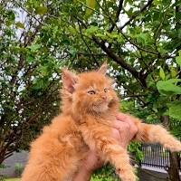
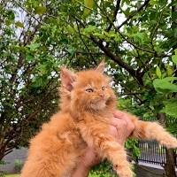

Maine Coon
O Maine Coon, conhecido como o "gigante gentil", é uma raça de gato originária do estado de Maine, nos Estados Unidos. Acredita-se que a raça surgiu do cruzamento de gatos de pelo curto locais com gatos de pelo longo trazidos por marinheiros europeus, como os Vikings. A raça é famosa por seu tamanho grande, pelagem densa e cauda espessa, que lembra um guaxinim (raccoon em inglês), daí o nome "Coon".
Apesar do tamanho, o gato maine coon é amigável, brincalhão e doce. É muito sociável e gosta da companhia da família humana. Esse felino se destaca pela cabeça quadrada, orelhas grandes, compridas na base e levemente pontudas, com tufos de pelos que lembram as orelhas de um guaxinim. Os olhos também são bem grandes e com ângulos levemente ovais, podendo ser de qualquer cor, e uma cauda comprida e fluida com bastante subpelo. Os gatos da raça Maine Coon possuem uma estrutura corporal robusta, peito largo, e graças aos seus ossos sólidos e uma estrutura muscular forte. Os gatos machos se destacam pelo pescoço musculoso e forte. De forma geral, eles têm o corpo alongado com comprimento médio das pernas. A pelagem deles é mais curta e densa na cabeça e comprida nas costas e laterais. Tem uma textura suave e cai levemente, mostrando a camada interna que é densa e grossa para proteger contra o frio.
Esses gatos adoram brincar e se divertir ao longo de toda a vida, até mesmo na velhice. Eles são superinteligentes e capazes de reconhecer palavras de ordem. Além disso, são famosos por sua vocalização e adoram “falar” com os humanos. Devido à natureza caçadora e de constantes brincadeiras, esses gatos precisam de sessões de brincadeira com os tutores. Nessas sessões,é possível usar brinquedos como camas de pesca, dispensadores de comida, catnip ou até mesmo outros artefatos mais simples, feitos de papelão. É importante prestar atenção ao enriquecimento ambiental do felino, adequando a casa com estruturas para ele subir, erva-de-gato, túneis, fontes de água, entre outros. Uma curiosidade é que os gatos da raça maine coon são aficcionados pela água se entretendo por muito tempo com chuveiros, torneiras, mangueiras e bacias cheias. E não podemos esquecer que é muito importante brincar com esses felinos pelo menos de 20 a 40 minutos por dia para deixá-lo sempre feliz.
 

Persa
O gato persa tem suas origens na antiga Pérsia, região que hoje corresponde ao Irã. Acredita-se que a raça tenha surgido no século XVII e se tornou um animal de estimação popular entre a elite da época. A raça foi trazida para a Europa por um viajante italiano, Pietro Della Valle, que ficou encantado com sua beleza. Na Europa, os persas foram cruzados com gatos Angorá, o que resultou na aparência peluda e distinta que conhecemos hoje.
Quando nos deparamos com gatos persa uma característica muito marcante, além dos pelos longos, sedosos e com cores incríveis, é seu focinho. Ao contrário dos outros gatos, o desta raça é bem achatado (fazendo desta, uma das poucas raças felinas braquicefálicas). Esse charme, no entanto, requer bastante atenção dos donos, pois os persas são mais propensos a doenças relacionadas ao formato de seu focinho. Mas nada que um papai cuidadoso não possa resolver. Bastante musculoso, esse gatinho tem olhos grandes, patas curtas e cabeça grande e arredondada, os gatinhos dessa raça costumam ser considerados de médio a grande porte, porque chegam a pesar até seis quilos.
Sabe aquele mito de que gatos não se ligam aos humanos e que não demonstram muito o sentimento que nutrem por seus papais? Esqueça toda essa história se você está considerando adotar uma gata persa. Muito tranquila, essa raça é extramente dócil e discreta, do tipo que mia poucas vezes (a menos que algo a esteja incomodando, ou esteja realmente querendo que seus humanos prestem atenção em alguma coisa). Bastante sossegada, a raça persa se adapta facilmente a locais pequenos, como apartamentos e lofts. Além disso, como são muito ligados a seus pais, são perfeitos para quem busca uma boa companhia. Os persas se dão muito bem também com crianças ou outros animais, como os cães, por exemplo. A convivência com eles é bem tranquila, mas se o clima começar a ficar um tantinho mais agitado, o persa discretamente se despede, procurando um lugar tranquilo para descansar. Uma característica muito interessante dos gatos persa é seu amor pelo sono. Essa raça costuma dormir bastante, mais ou menos 18 horas por dia, normalmente no colo de seus humanos. Os gatos persa, aliás, tem um representante famoso, o gato Garfield. Sim, ele é um persa, que adora comer e dormir. Duas coisas que esses simpáticos gatinhos tanto gostam.